Fourteen file types per family. Each numbered proposal is a complete set. The small rows use dedicated 16 and 32 px optical drawings. No product name, app badge or third-party marks are included.
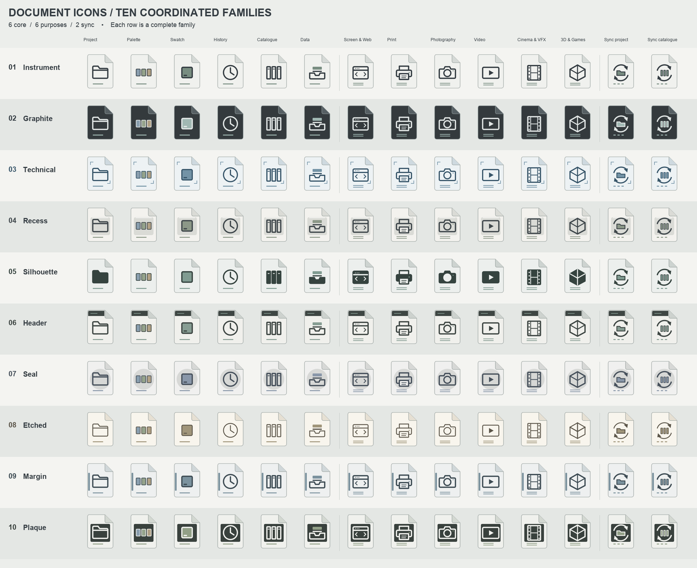
Quiet paper · precise line symbols
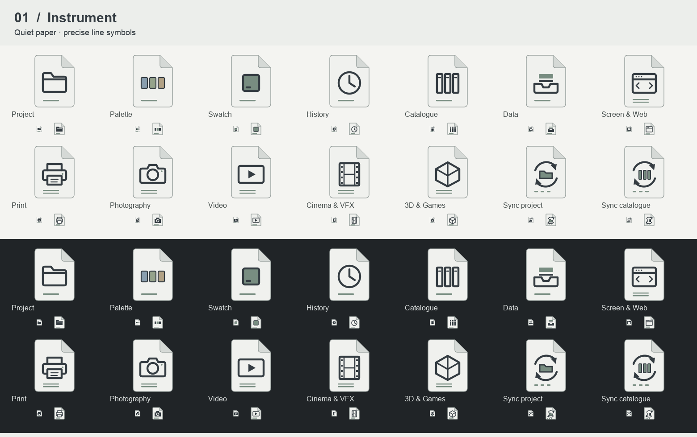
Dark document · luminous line symbols
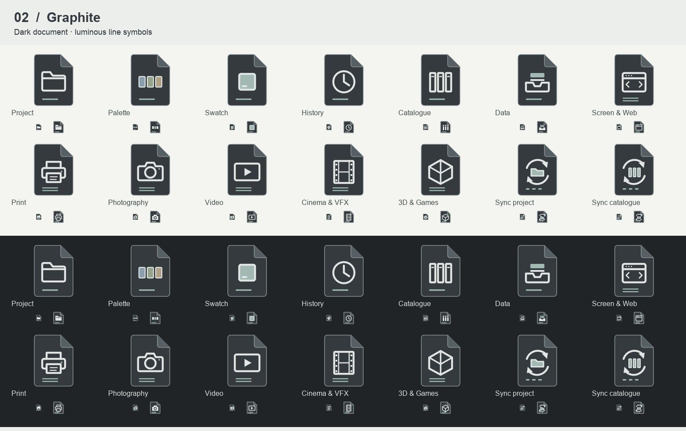
Drafting frame · square-ended geometry
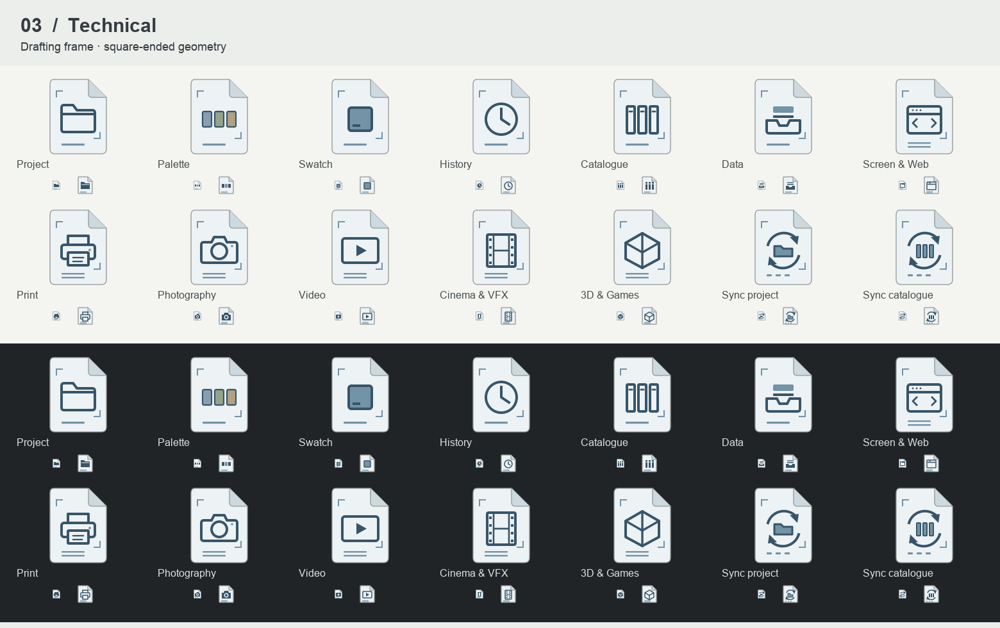
Inset instrument panel · soft grey field
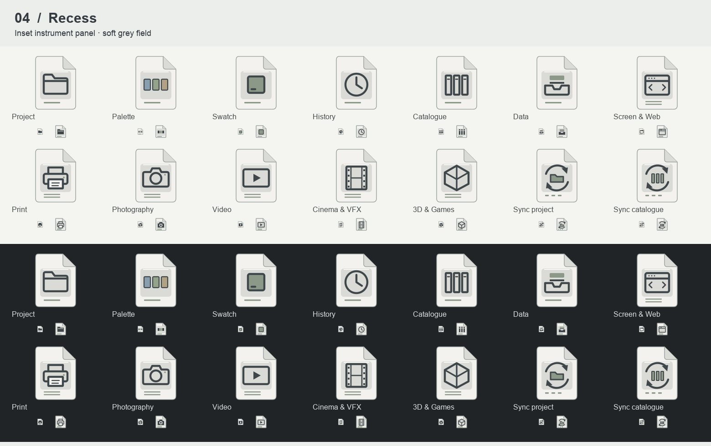
Solid marks · strongest compact presence
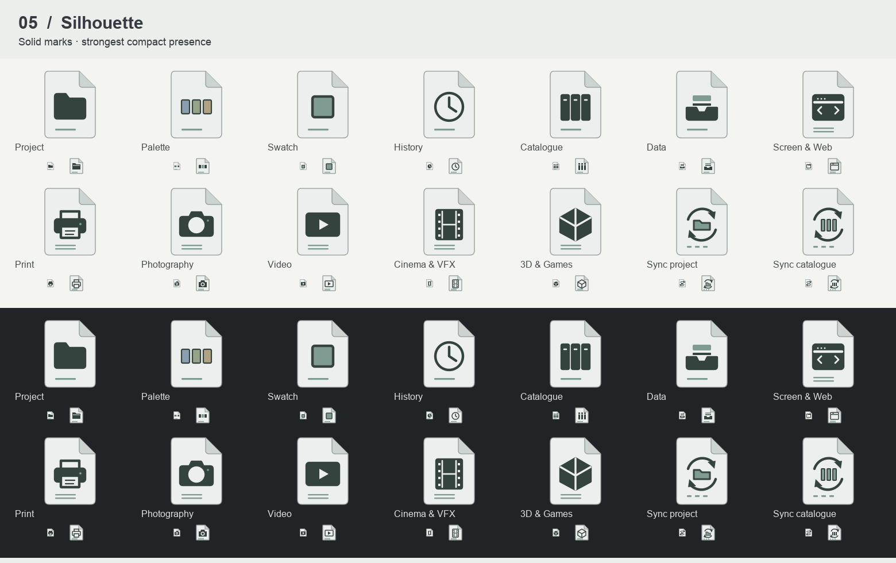
Dark upper register · open paper below
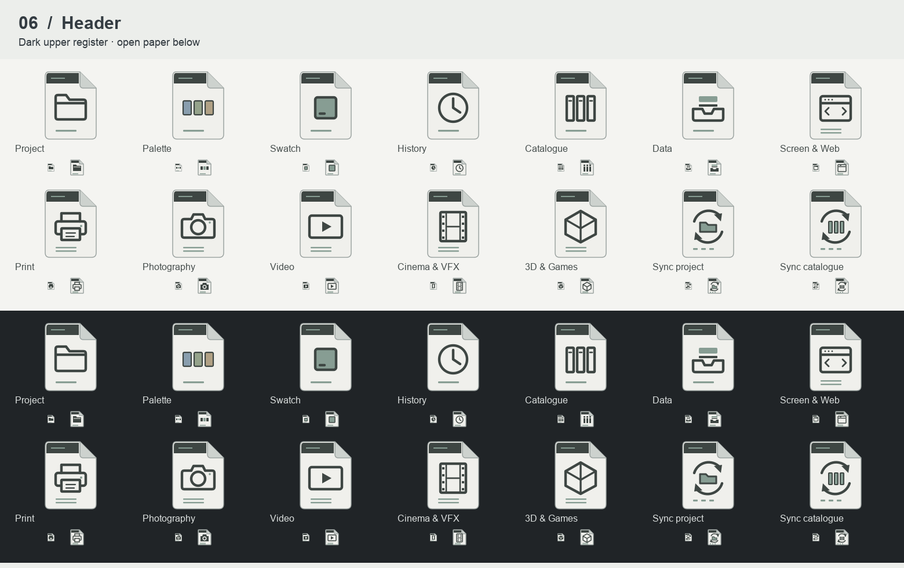
Circular field · centred identifying mark
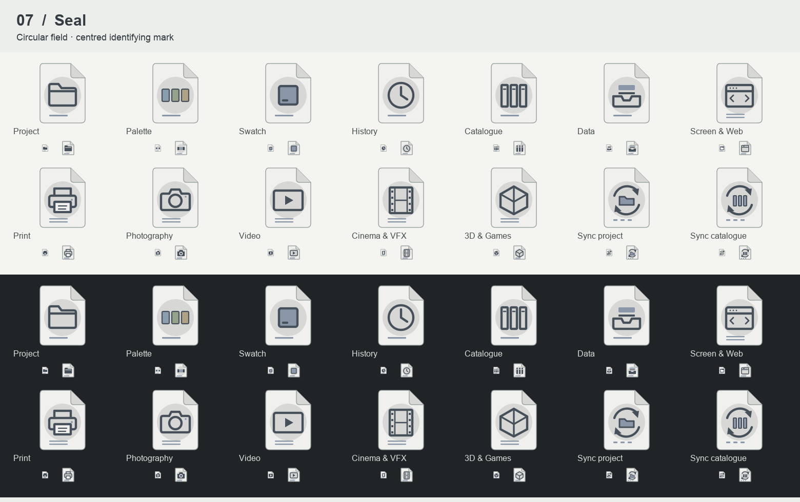
Flat ivory · open outlines and restrained detail
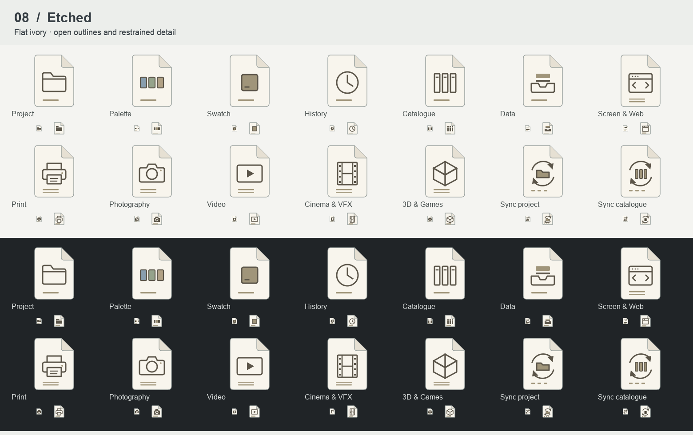
Vertical register · generous central symbol
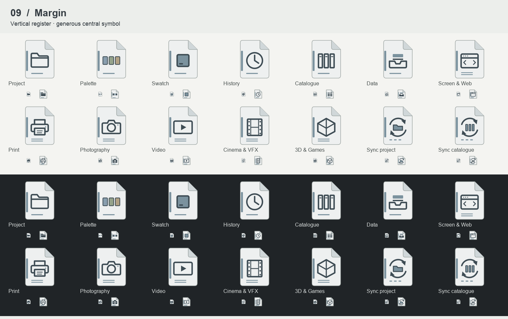
Dark symbol plate · light paper surround
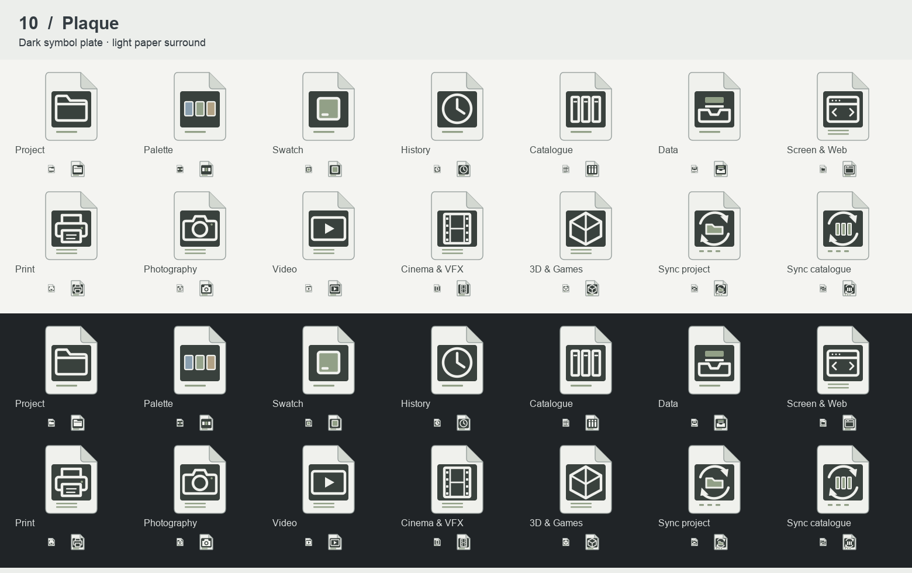